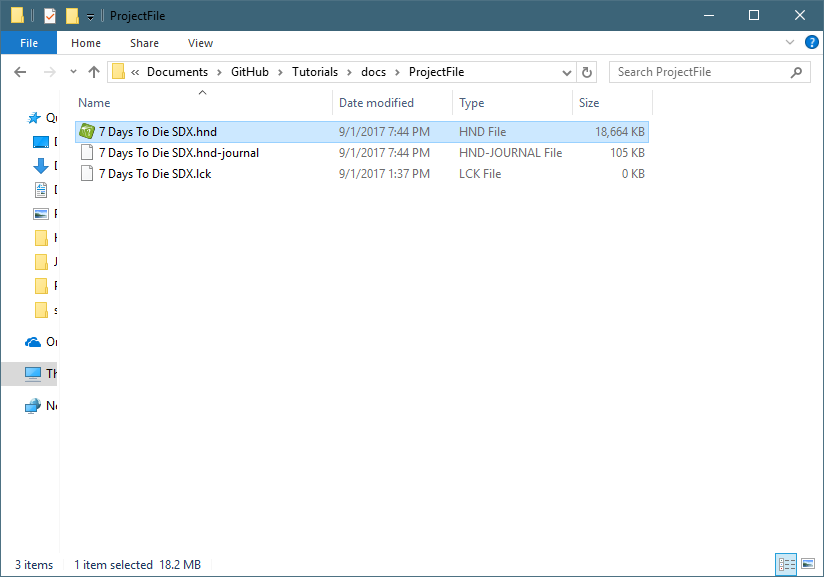

This document was generated by HelpNDoc Personal Edition 5.2.
To Update this document, and re-host, follow these steps:
- Clone, Fork, or download the main Repos: https://github.com/7D2DSDX/Tutorials
- Under the docs folder, look for the ProjectFile
Double click on the Project File called "7 Days To Die SDX.hnd"

Edit the tutorial as needed.
When you are complete, click on the Home tab, then "Generate Help"
By default, the 7 Days To Die SDX Tutorial generates a .chm, a website, and a PDF of its documentation.
If you click on "Build html documentation", you'll see the only changes from default that we used:
You'll notice the website will get built ..\, which is one folder up from the ProjectFile
Click on Generate. It will take a few minutes to generate.
Created with the Personal Edition of HelpNDoc: Full-featured Help generator